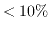

Next: Spectral Line Imaging Considerations Up: Imaging Previous: Imaging
Even if you are only interested in continuum imaging, your data may contain several frequencies. Unless you have averaged over frequency channels earlier, your data still contains the 33 frequency channels produced by the ATCA correlator. Additionally as the ATCA can observe two frequency windows simultaneously, and if these two windows are relatively close (within about 25% of each other), then you can get extra sensitivity and improved u-v coverage by combining the two sets of data during imaging. Indeed you can enhance your u-v coverage further (but not sensitivity) by time-switching the frequency setup used, and so you might have observations at several frequencies, perhaps from different configurations.
The net result is that you possibly have data observed at multiple frequencies, and you are faced with the question of how to make an image from these data. Generally, unless perhaps your observation consists of a single frequency band at 3 cm, now is not the time to do any more averaging. It is better to let the imaging task, invert, do its job with the UN-averaged data. By giving invert data that has not been averaged in frequency, it can grid the individual channels at their correct location in the u-v plane (rather than some average location). In this way bandwidth smearing is reduced and the better u-v coverage results in a better beam. The advantage of doing this decrease with the fractional bandwidth that your data occupies, and so the reasons for not averaging are less compelling when imaging using a single frequency band at 3 cm. In this case, the small disadvantages of not doing the frequency averaging (somewhat slower run time, and a larger scratch file) might outweigh the advantages.
The technique of forming a single continuum image from a variety of frequencies is called ``multi-frequency synthesis'' (MFS). It produces an image with a frequency corresponding to some average of the frequencies of the input data. There is nothing particularly magical about combining different frequencies to produce a single continuum image. This is done all the time (interferometers are never monochromatic). The advantage of MFS is that it can take a greater fractional spread in frequencies before artifacts become a problem.
Eventually MFS will break down because of the variation in the sources flux density with frequency. If the fractional spread in frequencies is small () or if high dynamic range imaging is not required (dynamic ranges less than a few hundred or so), then spectral index effects are unimportant. You can make an MFS image, and deconvolve it using the conventional deconvolution tasks (if deconvolution is required). Otherwise, spectral index effects are likely to be important, and you should use a special task (mfclean) for the deconvolution. Note that the decision to use MFS in the imaging does not require you to use mfclean in the deconvolution. While many ATCA continuum observations will benefit from using MFS in the imaging, a much more select set will benefit from accounting for spectral index effects in the deconvolution.
Miriad manager